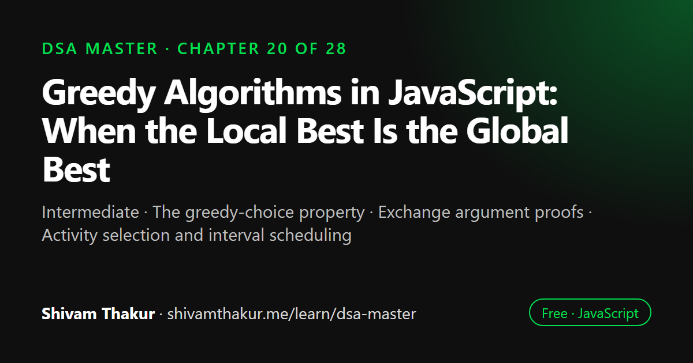

Chapter 20 of 28 · Intermediate
Greedy Algorithms in JavaScript: When the Local Best Is the Global Best
Greedy Algorithms — When the Locally Best Choice Is Globally Best

A greedy algorithm builds a solution by always taking the choice that looks best right now, never reconsidering it. It is only correct when the problem has the greedy-choice property and optimal substructure. This chapter shows where greedy fails, how to prove it correct with an exchange argument, and works through activity selection, interval scheduling, Huffman coding and greedy versus DP.
In this chapter you will learn
- The greedy-choice property
- Exchange argument proofs
- Activity selection and interval scheduling
- Huffman coding
- Greedy vs dynamic programming
20.0 The Question This Chapter Answers
Chapters 18 and 19 built Dynamic Programming around a specific worry: "the locally best-looking choice right now might not lead to the globally best outcome, so I need to explore/remember multiple possibilities." This chapter is about the opposite situation: problems where making the greedy, locally optimal choice at every single step — never reconsidering, never backtracking — is provably guaranteed to produce the globally optimal answer. When this works, greedy algorithms are dramatically simpler and faster than DP for the same problem. The entire challenge of this chapter is learning to recognize when this guarantee actually holds — because using greedy when it doesn't hold produces a confidently wrong answer, not a slower correct one.
20.1 Why Greedy Fails Without the Right Structure: A Concrete Counter-Example
Coin denominations: [1, 3, 4], target = 6
GREEDY approach (always take the largest coin that fits):
Take 4 (remaining: 2). Take 1 (remaining: 1). Take 1 (remaining: 0).
Total coins used: 3 (4+1+1)
OPTIMAL answer (found via DP, Chapter 18):
Take 3 + 3 = 6, using only 2 coins!
GREEDY GAVE THE WRONG ANSWER. The locally "best-looking" choice (grab the
biggest coin available) led to a globally WORSE outcome than a different,
less locally-greedy-looking sequence of choices.20.2 The Greedy-Choice Property and Optimal Substructure
Definition: A problem is solvable via a greedy algorithm if it has the greedy-choice property (a globally optimal solution can be reached by making a sequence of locally optimal choices, each made once and never reconsidered) and optimal substructure (the same property required for DP, from Chapter 18 — an optimal solution contains optimal solutions to sub-problems).
20.3 Activity Selection: The Canonical Greedy Problem, Proven Correct
The problem: given a set of activities, each with a start and end time, select the maximum number of non-overlapping activities that can be performed by a single person.
The Greedy Strategy: Always Pick the Activity That Finishes Earliest
function activitySelection(activities) {
// activities: Array<[start, end]>
const sorted = [...activities].sort((a, b) => a[1] - b[1]); // sort by END TIME, ascending
const selected = [sorted[0]];
let lastEndTime = sorted[0][1];
for (let i = 1; i < sorted.length; i++) {
const [start, end] = sorted[i];
if (start >= lastEndTime) { // doesn't conflict with the most recently selected activity
selected.push(sorted[i]);
lastEndTime = end;
}
}
return selected;
}
console.log(activitySelection([[1,4],[3,5],[0,6],[5,7],[3,9],[5,9],[6,10],[8,11],[8,12],[2,14],[12,16]]));
// [[1,4],[5,7],[8,11],[12,16]] -- 4 non-overlapping activitiesThe Formal Proof (An "Exchange Argument" — A Genuinely Important Technique to Know)
This is worth walking through carefully, because "exchange argument" proofs are the standard technique for justifying any greedy algorithm's correctness, not just this one.
Claim: always selecting the activity that finishes earliest (among still-compatible options) never loses optimality.
Proof sketch: suppose an optimal solution S exists that does not start by picking the earliest-finishing activity a (instead picking some other activity b first, where a finishes no later than b). We can always swap b for a in S without making the solution worse: since a finishes at least as early as b, every activity in S that was compatible with b (started after b's end time) is also compatible with a (since a ends even earlier, or at the same time) — so replacing b with a produces an equally-sized, still-valid solution. Since we can always perform this swap without any loss, there must exist an optimal solution that does start with the earliest-finishing activity — proving the greedy choice is always safe.
20.4 Interval Scheduling Variants: When Greedy Applies, and When It Silently Doesn't
20.4.1 Merge Overlapping Intervals (Greedy + Sorting, No Proof-of-Optimality Needed — It's Deterministic, Not an Optimization Choice)
function mergeIntervals(intervals) {
if (intervals.length === 0) return [];
const sorted = [...intervals].sort((a, b) => a[0] - b[0]); // sort by START time
const merged = [sorted[0]];
for (let i = 1; i < sorted.length; i++) {
const lastMerged = merged[merged.length - 1];
const current = sorted[i];
if (current[0] <= lastMerged[1]) { // overlaps with the last merged interval
lastMerged[1] = Math.max(lastMerged[1], current[1]); // extend it
} else {
merged.push(current); // no overlap — start a new merged interval
}
}
return merged;
}
console.log(mergeIntervals([[1,3],[2,6],[8,10],[15,18]])); // [[1,6],[8,10],[15,18]]20.4.2 Minimum Number of Meeting Rooms (A Direct Callback to Chapter 9's Heap)
The problem: given meeting intervals, find the minimum number of rooms required so no two overlapping meetings share a room.
function minMeetingRooms(intervals) {
const sorted = [...intervals].sort((a, b) => a[0] - b[0]); // sort by START time
const endTimesHeap = new Heap((a, b) => a - b); // Chapter 9's min-heap!
for (const [start, end] of sorted) {
if (endTimesHeap.size > 0 && endTimesHeap.peek() <= start) {
endTimesHeap.extract(); // a room has freed up (its meeting ended by this start time) — reuse it
}
endTimesHeap.insert(end); // this meeting now occupies a room, ending at `end`
}
return endTimesHeap.size; // however many rooms are simultaneously occupied at the end = the answer
}20.5 Huffman Coding: Greedy Tree Construction (Cashing In Chapters 8 and 9 Together)
The problem: given character frequencies in a text, construct a binary encoding (each character mapped to a sequence of bits) that minimizes the total encoded length, by giving more frequent characters shorter codes.
The Greedy Strategy: Always Merge the Two Least-Frequent Nodes
class HuffmanNode {
constructor(char, freq, left = null, right = null) {
this.char = char;
this.freq = freq;
this.left = left;
this.right = right;
}
}
function buildHuffmanTree(frequencies) {
// frequencies: Map<char, count>
const minHeap = new Heap((a, b) => a.freq - b.freq); // Chapter 9's heap, again!
for (const [char, freq] of frequencies) {
minHeap.insert(new HuffmanNode(char, freq));
}
while (minHeap.size > 1) {
const left = minHeap.extract(); // the TWO least-frequent nodes...
const right = minHeap.extract(); // ...are ALWAYS merged together next
const merged = new HuffmanNode(null, left.freq + right.freq, left, right);
minHeap.insert(merged);
}
return minHeap.extract(); // the single remaining node is the tree's root
}
function generateCodes(node, prefix = '', codes = new Map()) {
if (node === null) return codes;
if (node.char !== null) { // a LEAF node — represents an actual character
codes.set(node.char, prefix || '0'); // handle the edge case of only one distinct character
return codes;
}
generateCodes(node.left, prefix + '0', codes);
generateCodes(node.right, prefix + '1', codes);
return codes;
}
const frequencies = new Map([['a', 5], ['b', 9], ['c', 12], ['d', 13], ['e', 16], ['f', 45]]);
const tree = buildHuffmanTree(frequencies);
console.log(generateCodes(tree));
// More frequent characters (like 'f', freq 45) get SHORTER codes;
// less frequent characters (like 'a', freq 5) get LONGER codes.20.6 Greedy vs. DP: The Decisive Comparison, Worked Through Explicitly
Fractional Knapsack (Greedy) vs. 0/1 Knapsack (DP) — The Single Best Illustration of This Chapter's Central Lesson
Recall Chapter 19's 0/1 Knapsack, solved with DP because each item could only be used whole or not at all. Now consider the Fractional Knapsack variant: items can be broken into arbitrary fractions (imagine sacks of grain, not indivisible gold bars).
function fractionalKnapsack(items, capacity) {
// items: Array<{weight, value}>
const sorted = [...items].sort((a, b) => (b.value / b.weight) - (a.value / a.weight)); // sort by VALUE DENSITY, descending
let totalValue = 0;
let remainingCapacity = capacity;
for (const item of sorted) {
if (remainingCapacity <= 0) break;
if (item.weight <= remainingCapacity) {
totalValue += item.value; // take the WHOLE item
remainingCapacity -= item.weight;
} else {
const fraction = remainingCapacity / item.weight;
totalValue += item.value * fraction; // take a FRACTION of the item
remainingCapacity = 0;
}
}
return totalValue;
}Why Greedy Works Here But NOT for 0/1 Knapsack — The Crucial Distinguishing Insight
Fractional Knapsack's greedy strategy (always take the highest value-per-weight item first, taking a fraction if needed to exactly fill remaining capacity) is provably optimal, via a straightforward exchange argument: if you're not taking the highest-density item first, you could always swap some of a lower-density item for more of the highest-density item, strictly improving (or at worst maintaining) total value, since you're getting more value per unit of the same consumed capacity.
This exact argument breaks down completely for 0/1 Knapsack, because you cannot take "a fraction" of an item — you're stuck with all-or-nothing, indivisible choices. A high-value-density item might simply not "fit" the remaining capacity well as a whole unit, forcing you to leave capacity unused or choose a different combination entirely — exactly the kind of "the locally best-looking choice might not fit into a good overall combination" scenario DP is built to correctly navigate by considering all combinations systematically, rather than committing irreversibly to one greedy choice.
20.7 Edge Cases and Gotchas Checklist for Greedy Algorithms
- Never assume greedy works without justification. Always be ready to sketch an exchange argument, or explicitly identify the problem as one of the well-known "greedy is provably correct here" cases (activity selection, Huffman coding, fractional knapsack, MST via Kruskal's/Prim's from Chapter 13).
- Sorting criterion matters enormously — Activity Selection specifically requires sorting by end time, not start time or duration; verify the specific, provably-correct criterion for each problem rather than assuming any "reasonable-sounding" sort works.
- Ties in sorting — verify your comparator's tie-breaking behavior doesn't silently break the greedy guarantee (usually fine for the problems in this chapter, but worth explicitly checking for problem-specific edge cases).
- Empty input. Verify functions handle zero activities/intervals/items gracefully.
- Single item/interval/activity. Verify trivial base cases work without special-casing bugs.
- Recognizing when a problem LOOKS greedy-friendly but ISN'T (0/1 Knapsack, general Coin Change) — this chapter's single most important discipline is the habit of pausing to verify, not just pattern-matching "this looks like a sort-then-scan problem, so greedy must work."
20.8 Chapter Summary
This chapter introduced greedy algorithms as the disciplined, narrower sibling of Dynamic Programming: both require optimal substructure, but greedy additionally requires the greedy-choice property — the ability to prove, in advance, that committing irreversibly to the locally optimal choice at each step can never prevent reaching a globally optimal solution. We opened with a stark, concrete counter-example (Coin Change with denominations [1,3,4]) showing that greedy's intuitive appeal is not evidence of its correctness — the exact reason Chapter 18 solved general Coin Change with DP rather than the "always take the biggest coin" instinct that works only for specific denomination systems like US currency.
We built genuine muscle memory for proving (not just implementing) greedy correctness via the exchange argument technique, worked through fully and rigorously for Activity Selection: assume an optimal solution doesn't make the greedy choice, show swapping in the greedy choice cannot make things worse, conclude an optimal solution making the greedy choice must therefore exist. This exact proof template — reusable far beyond this one problem — is one of the most valuable transferable skills in the chapter, alongside the crucial, specific correction that Activity Selection requires sorting by end time, not duration or start time, a tempting but provably incorrect alternative.
We distinguished genuine optimization-requiring greedy choices (Activity Selection) from merely deterministic sort-then-scan processing with no actual "choice" to justify (Merge Intervals), and demonstrated greedy strategies frequently paired with a specific supporting data structure that makes the greedy choice cheap at every step — Chapter 9's heap powering Minimum Meeting Rooms' "always know the earliest-ending occupied room" requirement, and again powering Huffman Coding's "always merge the two least-frequent nodes" tree-construction strategy, itself a beautiful capstone composing Chapter 8's trees, Chapter 9's heaps, and this chapter's greedy-choice justification into one coherent algorithm.
We closed with this chapter's single most important, most quotable comparison: Fractional Knapsack (greedy-correct, since divisibility lets the exchange argument hold cleanly) versus 0/1 Knapsack (Chapter 19's DP, since indivisibility breaks that same argument by potentially leaving capacity that no remaining whole item fits well) — the clearest possible illustration of this entire chapter's central discipline: greedy and DP are not interchangeable stylistic preferences for the same problems, but genuinely different tools whose applicability depends on provable structural properties of the specific problem at hand, and confusing which applies produces a confidently wrong answer rather than merely a slower correct one.
20.9 Revision Notes
- Greedy requires optimal substructure (shared with DP) PLUS the greedy-choice property: proof that the locally optimal choice, committed to irreversibly, never prevents a globally optimal outcome.
- Greedy's intuitive appeal is not proof of correctness — Coin Change with denominations [1,3,4] is a concrete counter-example showing "always take the biggest" can fail, which is why Chapter 18 solved general Coin Change with DP.
- The exchange argument is the standard proof technique: assume an optimal solution skips the greedy choice, show swapping it in cannot make things worse, conclude an optimal solution containing the greedy choice must exist.
- Activity Selection requires sorting by END TIME specifically — sorting by duration or start time is a tempting but provably incorrect alternative.
- Some "sort then scan" algorithms (Merge Intervals) are deterministic processing, not genuine optimization choices requiring justification — distinguish these from true greedy-choice problems (Activity Selection).
- Greedy strategies are frequently paired with a specific supporting structure that makes the greedy choice cheap: heaps (Chapter 9) power both Minimum Meeting Rooms and Huffman Coding's tree construction.
- Fractional Knapsack (greedy-correct, divisibility preserves the exchange argument) vs. 0/1 Knapsack (DP-required, Chapter 19, indivisibility breaks the exchange argument) is the single clearest illustration of when each technique applies.
20.10 Mind Map (ASCII)
GREEDY ALGORITHMS
|
+------------------+------------+------------+----------------------+
| | | |
WHEN GREEDY EXCHANGE GREEDY + DATA GREEDY vs DP
FAILS ARGUMENT STRUCTURE PAIRING (THE central
| (proof technique) | comparison)
Coin Change | Min Meeting Rooms |
[1,3,4]=6: Assume optimal = heap (Ch.9) tracks Fractional
greedy gives 3 solution skips earliest-ending room Knapsack:
coins (4+1+1), greedy choice -> | DIVISIBLE ->
optimal is 2 show swap can't Huffman Coding = greedy WORKS
(3+3)! make it worse -> heap (Ch.9) + tree (exchange arg
| greedy choice must (Ch.8) + greedy holds cleanly)
"Feels right" be part of SOME merge-two-smallest |
!= PROVEN optimal solution | 0/1 Knapsack
correct | "Always merge (Ch.19):
ACTIVITY SELECTION rarest symbols INDIVISIBLE ->
proven via exchange first" -- deepest greedy FAILS
argument: sort by codes for rarest (a good item
END TIME (not chars, minimizing might not FIT
duration/start!) total weighted leftover capacity)
| code length -> MUST use DP
Merge Intervals: |
deterministic, NOT THIS CONTRAST IS
a real "choice" to THE #1 TAKEAWAY
justify (different OF THIS CHAPTER
from Activity Selection!)20.11 Cheat Sheet
GREEDY QUALIFICATION CHECKLIST
==================================
1. Optimal substructure? (same requirement as DP)
2. GREEDY-CHOICE PROPERTY: can I PROVE the locally optimal choice, committed
to irreversibly, never prevents reaching a globally optimal solution?
-> Use the EXCHANGE ARGUMENT: assume optimal skips greedy choice, show
swapping it in can't make things worse, conclude greedy choice is safe.
IF EITHER ANSWER IS "NO" OR "I'M NOT SURE" -> DO NOT USE GREEDY. Use DP instead.
KNOWN GREEDY-CORRECT PROBLEMS
=================================
Activity Selection -> sort by END TIME, take earliest-finishing compatible activity
Fractional Knapsack -> sort by value/weight DENSITY, take greedily (divisible items)
Huffman Coding -> always merge the TWO LEAST-FREQUENT nodes (heap-powered)
MST (Kruskal's/Prim's, Ch.13) -> sort edges / expand cheapest frontier edge
KNOWN GREEDY-INCORRECT PROBLEMS (REQUIRE DP INSTEAD)
========================================================
General Coin Change (arbitrary denominations) -> DP (Chapter 18)
0/1 Knapsack (indivisible items) -> DP (Chapter 19)
THE #1 CONTRAST TO MEMORIZE
===============================
Fractional Knapsack (divisible) -> GREEDY works (exchange argument holds)
0/1 Knapsack (indivisible) -> DP required (exchange argument breaks --
a good item might not fit leftover capacity)
GREEDY + SUPPORTING STRUCTURE PAIRINGS
==========================================
"Always find the min/max cheaply at each step" -> pair with a HEAP (Chapter 9)
"Always check if already connected cheaply" -> pair with UNION-FIND (Chapter 14)20.12 Key Takeaways
- Greedy requires optimal substructure PLUS a provable greedy-choice property — intuition alone is not proof.
- The exchange argument (assume optimal skips the choice, show swapping it in can't hurt) is the standard, reusable proof technique for greedy correctness.
- Activity Selection's correct sort criterion is END TIME — a specific, provable requirement, not an arbitrary stylistic choice.
- Greedy strategies are frequently paired with a supporting structure (heaps for "cheapest next choice," Union-Find for "cheaply check connectivity") that makes the greedy choice efficient.
- Fractional Knapsack (greedy-correct) versus 0/1 Knapsack (DP-required) is the clearest, most quotable illustration of when each technique applies — divisibility is the deciding factor.
20.13 20 Multiple Choice Questions
Tap an answer to check it. Your score updates as you go.
Score: 0 / 0 answered (20 questions)
What two properties must a problem have for a greedy algorithm to be correct?
Why does the "always take the biggest coin" greedy strategy fail for coin denominations [1, 3, 4] and target 6?
What is the "exchange argument" used for?
In Activity Selection, what is the CORRECT sorting criterion?
Why is sorting by duration a common but INCORRECT choice for Activity Selection?
What is the key difference between Merge Intervals and Activity Selection regarding "greedy choice"?
What data structure powers the Minimum Meeting Rooms greedy algorithm?
What is the greedy strategy for Huffman Coding tree construction?
Why does merging the two least-frequent symbols first produce an optimal Huffman encoding?
What two earlier chapters' structures does Huffman Coding combine?
What allows Fractional Knapsack to be solved correctly with a greedy algorithm?
Why does the same greedy strategy FAIL for 0/1 Knapsack?
What is the correct approach for 0/1 Knapsack, given that greedy fails?
What is the sorting criterion for Fractional Knapsack's greedy algorithm?
What is the time complexity of the Fractional Knapsack greedy algorithm?
What should you do before assuming a greedy algorithm works for a new problem?
What single comparison does this chapter identify as its most valuable, quotable illustration?
What property do BOTH greedy algorithms and Dynamic Programming require?
What is a common, tempting mistake when evaluating whether greedy applies to a new problem?
In Minimum Meeting Rooms, what does the size of the heap represent at the end of the algorithm?
Show the answer key
1-b, 2-b, 3-b, 4-b, 5-b, 6-b, 7-b, 8-b, 9-b, 10-b, 11-b, 12-b, 13-b, 14-b, 15-b, 16-b, 17-b, 18-b, 19-a, 20-b
20.14 20 Coding Problems
Easy
- Implement
activitySelectionfrom memory (section 20.3), and verify it against a hand-traced small example. - Implement
mergeIntervalsfrom memory (section 20.4.1). - Given a set of intervals, determine if a new interval can be inserted without needing to merge with any existing interval.
- Given an array of numbers, determine the greedy "always take the largest remaining" solution for making change with denominations [1, 5, 10, 25], and verify it's correct for these SPECIFIC denominations (US currency, where greedy happens to work).
- Implement a function that determines if a given greedy coin-change solution for a set of denominations matches the DP-optimal (Chapter 18) solution, as a way to empirically check "does greedy happen to work for this denomination set?"
Medium
- Implement
minMeetingRoomsfrom memory (section 20.4.2), using Chapter 9's Heap class. - Implement
buildHuffmanTreeandgenerateCodesfrom memory (section 20.5), and verify more frequent characters receive shorter codes. - Implement
fractionalKnapsackfrom memory (section 20.6), and compare its output against 0/1 Knapsack (Chapter 19) on the same items to observe the difference divisibility makes. - Given a list of jobs with deadlines and profits (each job takes exactly one unit of time, at most one job per time slot), use a greedy strategy to maximize total profit (schedule the highest-profit jobs as late as possible before their deadlines).
- Given an array of gas station capacities and costs to travel between them (a circular route), use a greedy strategy to determine if a complete circuit is possible, and if so, find the starting station.
Hard
- Given a set of intervals representing when employees are busy, find all the "free time" slots common to everyone, using a greedy interval-merging approach.
- Implement the "jump game" problem: given an array where each element represents the maximum jump length from that position, use a greedy strategy to determine the minimum number of jumps needed to reach the end.
- Given a rope that needs to be cut into pieces of specific required lengths (with a cost equal to the length of rope cut at each step), use a greedy (heap-based) strategy to minimize the total cutting cost (directly analogous to Huffman Coding's merge-smallest-first strategy).
- Given a task scheduling problem with cooldown periods between identical tasks, use a greedy (heap-based) strategy to find the minimum total time needed to complete all tasks.
- Implement a proof-sketch (as code comments) alongside your solution to a NEW greedy problem of your choosing, explicitly writing out the exchange argument justifying why the greedy choice is safe.
Interview Level
- (Google-level) Given a set of intervals representing scheduled ad placements with values, use a greedy approach to select the maximum-value set of NON-OVERLAPPING placements, and discuss in comments why this differs from Activity Selection's simpler "maximize count" goal (hint: this variant may actually require DP instead — identify why, connecting back to this chapter's central lesson).
- (Amazon-level) Given delivery time windows for packages, use a greedy interval-scheduling approach to maximize the number of on-time deliveries achievable by a single driver.
- (Microsoft-level) Given a set of files to compress with known frequencies, implement Huffman Coding fully to generate an actual compressed bit-string representation of a sample text, and report the compression ratio achieved versus fixed-width encoding.
- (Meta-level) Given a content moderation queue with priority levels and processing deadlines, use a greedy strategy to maximize the number of high-priority items processed before their deadlines, explicitly justifying the greedy choice with an exchange argument in comments.
- (Netflix-level) Design a bandwidth allocation system: given multiple video streams with value-per-bandwidth-unit ratios (a direct Fractional-Knapsack-shaped problem, since bandwidth IS divisible), use greedy allocation to maximize total viewer satisfaction, explicitly contrasting this against a hypothetical scenario where streams could only be allocated bandwidth in fixed, indivisible chunks (which would require DP instead).
20.15 5 Interview Questions
- "Prove that your greedy Activity Selection algorithm is actually optimal, not just intuitively appealing." (Tests the exchange argument specifically, not just implementation.)
- "Why does greedy fail for coin change with denominations [1, 3, 4], and what would you use instead?" (Tests the concrete counter-example and DP as the correct fallback.)
- "Explain Huffman Coding's greedy strategy and why merging the least-frequent nodes first is correct." (Tests understanding of the depth-cost trade-off reasoning.)
- "Why does greedy work for Fractional Knapsack but not for 0/1 Knapsack?" (Tests the single most important comparison in this chapter.)
- "How would you determine, when facing a brand-new optimization problem, whether greedy is even a viable approach?" (Tests the qualification checklist and healthy skepticism toward "intuitive-seeming" greedy strategies.)
20.16 3 Real Projects
- Complete Greedy Algorithm Library: Implement Activity Selection, Merge Intervals, Minimum Meeting Rooms, Huffman Coding, and Fractional Knapsack in a single library, with a self-check script verifying correctness against brute-force or DP-based baselines where applicable (e.g., comparing Fractional Knapsack against 0/1 Knapsack on the same divisible-vs-indivisible framing).
- Text Compressor: Build a Node.js CLI tool implementing full Huffman Coding — reading a text file, computing character frequencies, building the Huffman tree, encoding the text into an actual bit-string representation, and reporting the compression ratio versus standard fixed-width (e.g., 8-bit ASCII) encoding.
- Meeting Room Scheduler Simulator: Build a tool that takes a list of meeting requests and uses the Minimum Meeting Rooms greedy algorithm to report both the minimum rooms required AND which specific meetings are assigned to which room, extending the basic count-only algorithm into a practical scheduling assignment tool.
20.17 Further Reading
- David Huffman's original 1952 paper introducing the coding algorithm bearing his name, written while he was a graduate student — a genuinely inspiring piece of computer science history.
- Jon Kleinberg and Éva Tardos, Algorithm Design, chapter on greedy algorithms, for the definitive, rigorous treatment of exchange arguments and greedy-choice proofs across a wide range of classic problems.
- Search "matroid theory greedy algorithms" for the advanced mathematical framework (matroids) that formally characterizes exactly which combinatorial optimization problems admit correct greedy solutions — a genuinely deep rabbit hole for the mathematically curious.
- LeetCode's "Greedy" problem tag, for extensive additional practice distinguishing genuine greedy-correct problems from disguised DP-requiring ones.
Greedy Algorithms in JavaScript, With Proofs: frequently asked questions
What is a greedy algorithm?
A greedy algorithm makes the locally best choice at each step and never undoes it, hoping the sequence of local choices gives the best overall answer. It is fast and simple, but only correct for problems with the greedy-choice property.
How do you prove a greedy algorithm is correct?
The standard tool is the exchange argument: take any optimal solution that does not include the greedy choice, and show you can swap the greedy choice in without making the solution worse. That proves some optimal solution starts with the greedy choice.
When does greedy fail?
Greedy fails when an early choice blocks better options later. Coin change with coins {1, 3, 4} and amount 6 is a classic example: greedy picks 4 + 1 + 1 (three coins), but 3 + 3 uses only two.
What is the difference between greedy and dynamic programming?
Greedy commits to one choice per step without looking back. Dynamic programming considers every choice for each sub-problem and keeps the best. Fractional knapsack can be solved greedily; 0/1 knapsack needs DP.